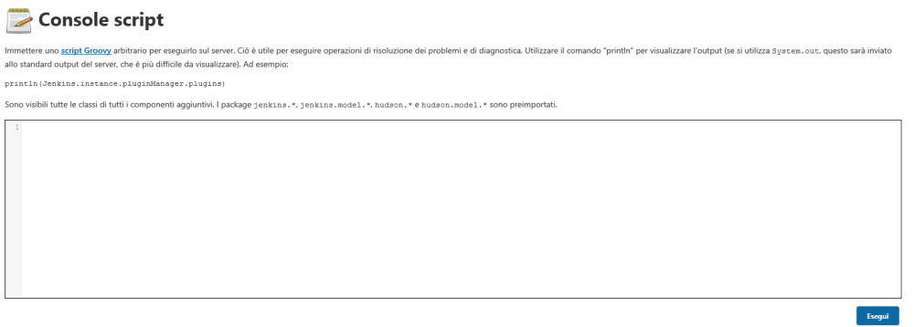

Jenkins
Windows
If Jenkins is installed on a Windows machine, usually it runs with SYSTEM privileges (or at least
Admin privileges). This make Jenkins an interesting target for Privilege Escalation.
Because of that, System
Administrators should change this account and use a service account with limited permissions on the local
system
Linux
By default, when installed on Linux, Jenkins will create a service account. This user account is not
given sudo or root access by default, however, this is always worth checking.
Script Console of
Jenkins(http://<jenkins_server>:8080/script)
The
Jenkins script console is an application
viewed in the web console that allows users to execute Jenkins Groovy scripts. When accessed, the script console
allows full access to Java and can be leveraged to do anything within the Java runtime process.
Because of the
power offered by the Jenkins Script Console, Jenkins and its agents should never be run as root user (on Linux) or
system administrator.
The
default credential(
https://docs.openshift.com/container-platform/3.3/using_images/other_images/jenkins.html#initializing-jenkins)
are:
username: admin
password: password
We can found the default password in
C:\Windows\system32\config\systemprofile\AppData\Local\Jenkins\.jenkins\secrets\initialAdminPassword
Bibliography:
•
http://www.labofapenetrationtester.com/2014/08/script-execution-and-privilege-esc-jenkins.html•
https://blog.pentesteracademy.com/abusing-jenkins-groovy-script-console-to-get-shell-98b951fa64a6•
https://www.crowdstrike.com/blog/your-jenkins-belongs-to-us-now-abusing-continuous-integration-systems/•
https://www.cyberark.com/resources/threat-research-blog/securing-jenkins-active-directory-and-ldap-services-in-a-jenkins-environment